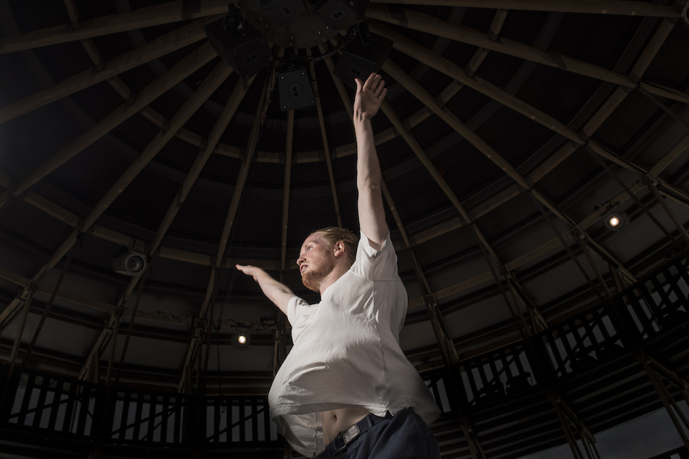
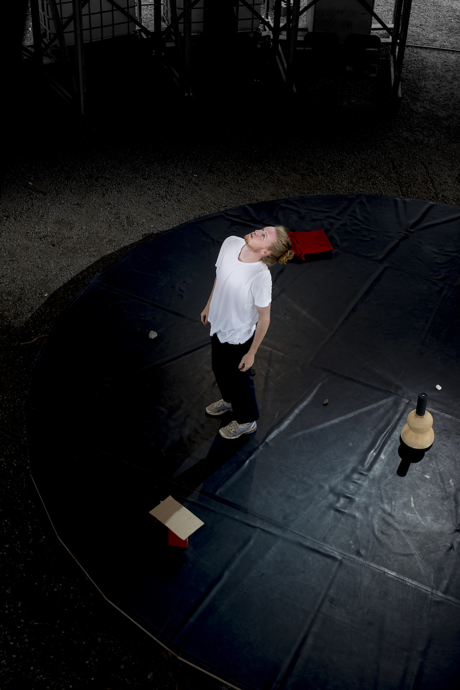

After All
Try to imagine that we as humans could exchange places with the earth. Would we then see how humans could perhaps do it better? And if the earth was in our shoes, would she understand that it is not all that easy to solve the problems? Would she see us trying?
This solo performance started with the belief that the solution of the climate crisis can be found in what we already have and how we can be creative with that. There is plenty enough already, but also too much. We see this performance as one example of how we can approach things: by looking at what is already present and using/approaching these things in a new way (each time). We do this by offering a new perspective and making elements that are already existing interesting again. By giving objects a different connection to each other in the space and by changing, repeating or reshuffling the order of movements, we can allow new meanings to appear. Maybe that's where we find the answers.
We see this performance as an attempt to make people active on the climate crisis, but mostly to allow the audience to calmly indulge in an evening without too much pressure. What to do and how to do the right things is complex and most of the time confusing. We can very easily punish ourselves but somehow we have to give it a try, together
Created by
Astrid De Haes & Pierre Bastin
Performed by
Pierre Bastin
Light design
Dominique Pollet
With the support of
SIDEWARDS, deFENIKS - WALPURGIS, Merksemdok